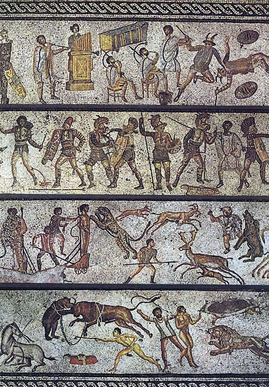
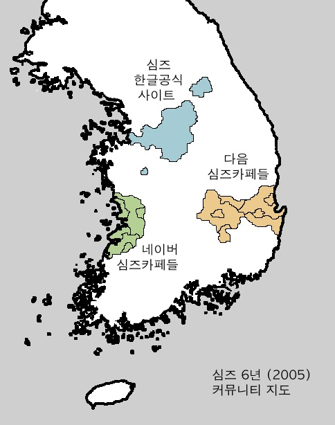

2004년에 심즈 2가 출시되고 난 뒤로, 심즈한글공식사이트는 심즈 2를 한국의 소비자들에게 소개하는 데에 몰두하기 시작했다.
보통 상식적으로는, 심즈 2를 전문적으로 소개하려면 아예 홈페이지를 따로 만들거나 아니면 최소한 홈페이지 내부에 완전히 다른 커뮤니티 공간을 만들어서 거기에 심즈 2에 관련된 내용을 기재하고, 기존의 심즈 1 커뮤니티는 내버려 두는 것이 자연스러운 방식이라고 생각한다.
그러나 심즈한글공식사이트의 운영진은 그냥 귀찮았던 건지, 아니면 웹페이지를 추가적으로 증축하는 데에 기술적인 문제가 있었는지는 몰라도, 사이트에 원래 존재하던 심즈 1 관련 페이지들을 반쯤 갈아엎고 심즈 2 관련 페이지들로 탈바꿈 시키기 시작했다. 더군다나 심즈 2 관련 게시판들을 따로 만들지 않고, 그냥 기존의 심즈 1 관련 게시판들을 심즈 2 유저들도 함께 사용하도록 했다.
이는 심즈 1 유저들과 심즈 2 유저들 모두에게 불만사항으로 다가왔다. 왜냐하면 이는 심즈 1과 심즈 2 사이의 혼동을 유발했기 때문이다.
(이미지 출처: Wikipedia: https://en.wikipedia.org/wiki/Roman_Empire)
(자료설명: 혼란에 빠진 심즈한글공식사이트의 모습을 그린 2세기 지중해 벽화.)
이런 운영방식은 이번이 처음이 아니었다. 2003년/2004년 쯤에는 운영진이 플레이스테이션 버전의 심즈와 엑스박스 버전의 심즈를 다 싸잡아서 심즈 1 커뮤니티 안에다가 소개할 때도 있었다. 다만 콘솔용 심즈를 하는 사람은 그 수가 현저히 적었고, 콘솔용 심즈는 게임 속 요소들이 심즈 1과 유사해서 딱히 소개할 내용이 많지 않았기 때문에 하나의 커뮤니티 안에서도 유저들 사이에 별로 혼동이 없었다.
심즈 2는 달랐다. 이 게임은 심즈 1과는 완전히 다른 매커니즘으로 작동하는 게임이었고, 출시 직후부터 심즈 1에 버금가는 수준의 팬 층을 거느리기 시작한 독립적인 작품이었다.
그런데 이 떠오르는 심즈계의 샛별을 기존의 심즈와 함께 하나의 커뮤니티로 묶어 버리자 심즈한글공식사이트는 정체성이 애매모호해지기 시작했고, 이로 인해 회원들은 하나 둘씩 다른 심즈 커뮤니티를 찾아 떠나버리기 시작했다.
어떤 이들은 네이버 지식인에서 심즈 관련 질문/답변을 공유하는 정도로 만족했고, 또 어떤 이들은 국내외의 개인 심즈사이트들을 들락거리며 정착할 곳을 찾았으며, 극소수는 아예 맥시스/EA에서 직접 운영하는 영문 심즈공식사이트까지 직접 찾아가서 커뮤니티 형성을 시도했다 (나도 이 '극소수'들 중 한 명이었다).
그리고 몇몇 이들은 네이버나 다음에 개설된 심즈카페들을 발견하고는 그곳에 본격적으로 정착하기 시작했다.
(심즈 6년(2005) 커뮤니티 지도)